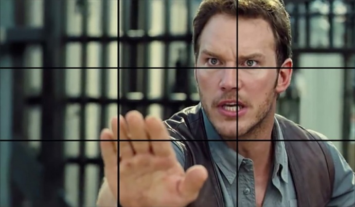
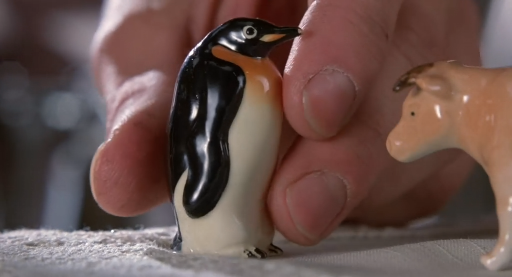
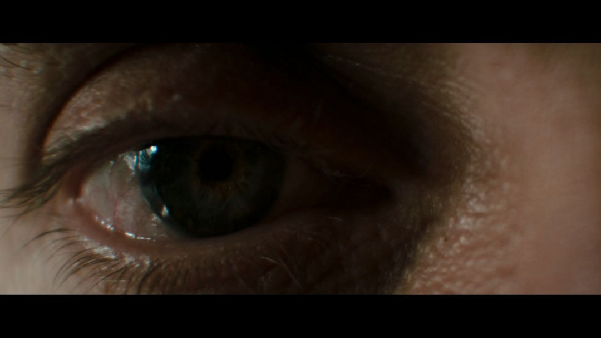
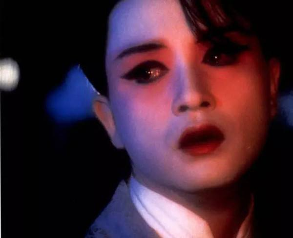
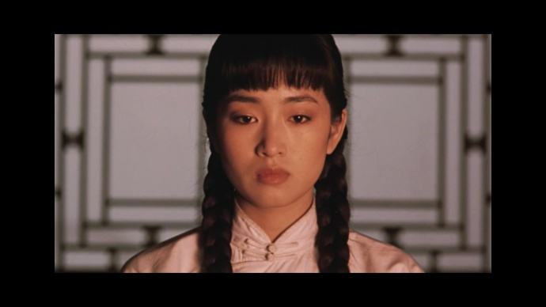
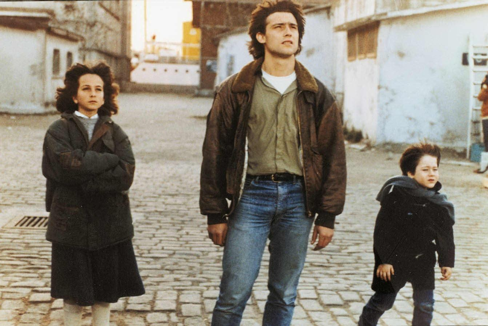
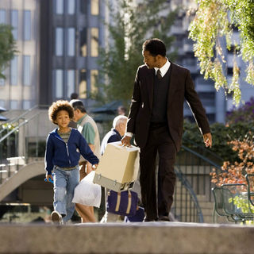
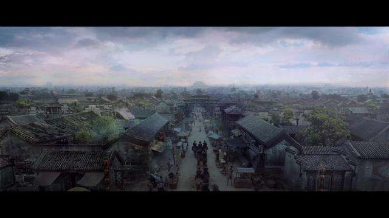

在画面上写一个“井”字，平均分成九格。两条竖线和两条横线交叉的四个点称为视线的“趣味点”，拍摄时应将重要元素置于趣味点。这种构图方式，表现鲜明，结构简练，常用于近景等不同景别。
如图，人物向左看，应将其置于右上焦点，给人物留出足够的视线空间。若位于左上，那么左边的空间会很拥挤，右边的空间则会被浪费。反之亦然。
《希区柯克与特吕弗对话录》一书中提到，希区柯克曾向他分享了一个简单但有效的构图法：画面中物体大小应与物体所处故事中的重要性直接关联起来。这条构图法则可用来制造紧张或悬疑效果，在观众还不清楚我们为什么要在视觉上如此强调某一物体时尤为明显。
在《十日危情》中，这只特写的企鹅占据了画面的大部分，表示它对影片叙事十分重要。这只企鹅正是女粉丝发现作家企图逃跑的重要原因。《盗梦空间》最后的镜头是特写的旋转陀螺，同样也很重要，它代表着主角身处梦境或者回到现实。
大特写将拍摄对象的某个部位占满整个镜头，起到强调和突出作用，具有极其鲜明、强烈的视觉效果。大特写能让观众看到最多细节。
特写镜头捕捉的是肩部以上的画面，此时背景处于次要地位，甚至消失。特写镜头能细微地表现人物面部表情，传达人物丰富的内心情感，也可以拉近人物和观众的距离。
图为《霸王别姬》中陈蝶衣含泪的特写表情，悲凉尽显。
近景镜头包含胸部以上的画面，用以传达面部表情、内心活动，刻画大致的环境背景。两人对话常用近景镜头。
图为张艺谋《大红灯笼高高挂》的开场，可以清楚地观察颂莲的表情，也能看出场景设于室内，并由主人公的着装打扮和窗户样式推测故事发生的大致时间。
中景镜头包含人物膝盖以上画面，相比表情，人物上身的肢体动作和所处背景更加一目了然。中景用于交代人物互动关系、空间位置关系等。
全景镜头照顾到有一定距离的人物及广阔的四周环境，重点展现人物和人物之间、以及人物和环境的关系，可以传递一定的叙事意义。
这张全景图出自《幸福来敲门》，可以看出父子俩提着家当正在街道上匆忙行走，人物的互动也展现其中。
大远景包含比全景更宽广的空间，往往作为建置镜头，交代故事发生的整体地理环境或社会历史环境，影片开头一般会安排一组建置镜头，为整个故事奠定基调。拍摄手法一般是俯瞰拍摄。
